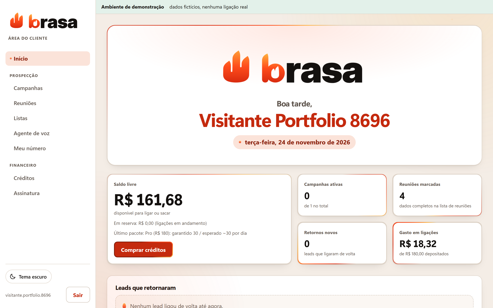
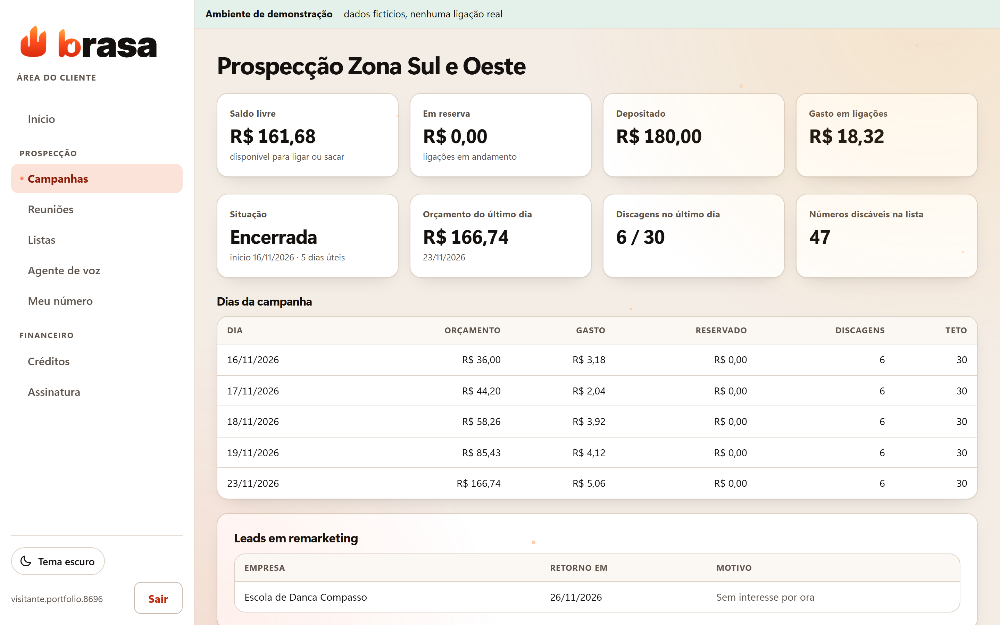
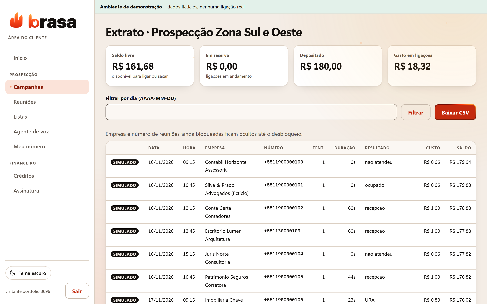
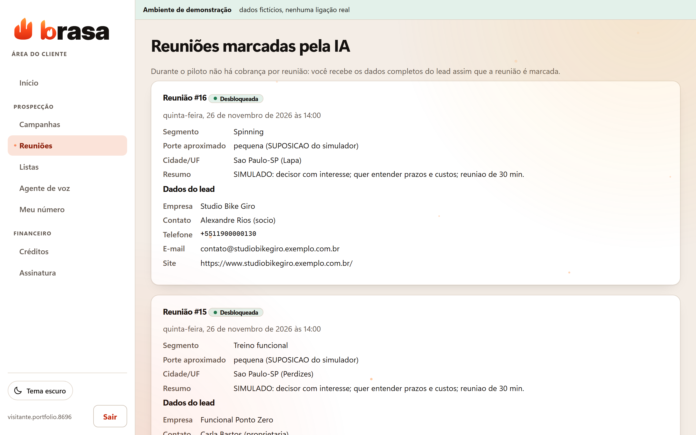
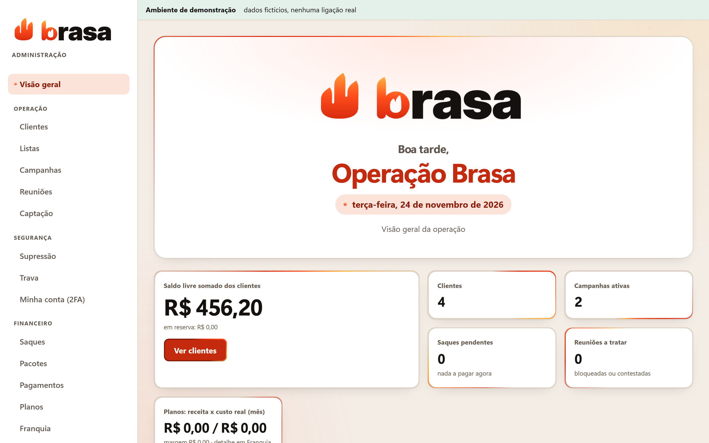
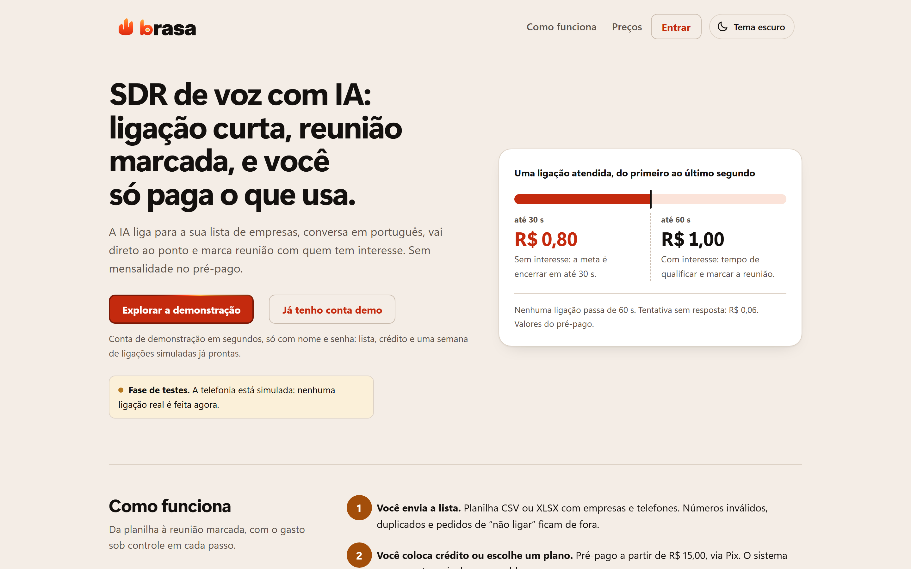
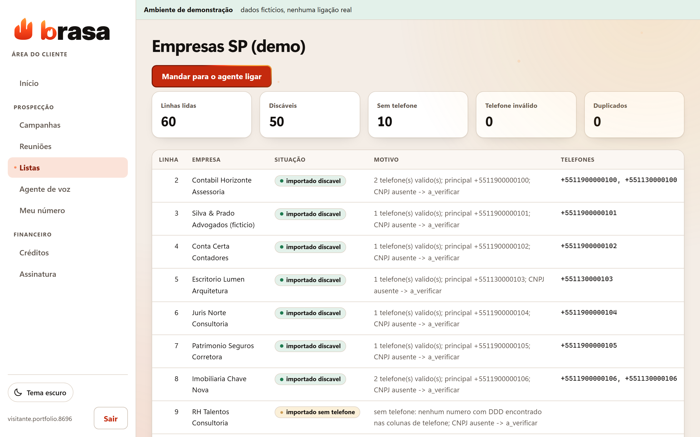

A Brasa liga para listas de empresas com um agente de voz por IA, conversa com quem atende e marca reuniões para o time comercial do cliente. Tudo acompanhado em um portal, com créditos pré-pagos e extrato por ligação.
Demo com dados fictícios e telefonia simulada: nenhuma ligação real é feita.

Do cadastro da lista à reunião na agenda, sem ninguém do cliente precisar pegar o telefone.
O cliente envia uma planilha de empresas. O sistema valida os telefones, remove duplicados e respeita quem pediu para não ser contatado.
Campanhas com horário comercial e ritmo diário controlados. O agente de voz conversa, contorna objeções e identifica interesse.
Quem aceita vira reunião marcada no portal, com resumo da conversa. Cada ligação fica no extrato com duração, resultado e custo.
Um produto completo, pensado para operar com dinheiro e dados reais desde o primeiro dia.
Campanhas, listas, reuniões, configuração do agente de voz, créditos e saque do saldo.
Visão da operação, clientes, pagamentos, lista de supressão e trava central de ligações.
Reserva antes de discar e débito por ligação em livro-caixa imutável: o extrato sempre fecha com o saldo.
Isolamento de dados por cliente no banco, 2FA no admin, proteção CSRF, política de conteúdo restritiva e senhas com hash forte.
Reproduz o provedor de voz real, com eventos assinados, para testar campanhas inteiras sem gastar nem ligar para ninguém.
Testes automatizados de unidade, integração e ponta a ponta, mais verificação de acessibilidade das telas.
Capturas da demo. Clique para ampliar.






Renderização no servidor, pouco JavaScript no navegador e um banco relacional no centro de tudo.
Crie uma conta de demonstração em segundos. Ela já vem com uma semana de operação simulada para explorar.
Dados fictícios · nenhuma ligação real